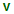

Variables View
The Variables view displays variables and parameters (local and global), along with their values. If the view is not displayed, it can be opened by selecting it from the menu.
Variables and parameters play an important role during an XSLT/XQuery transformation. Oxygen XML Editor uses the following icons to differentiate variables and parameters:
-  - Global variable.
 -
Local variable.
-
Local variable.- - Global parameter.
 -
Local parameter.
-
Local parameter.
The following value types are available:
- Boolean
- String
- Date - XSLT 2.0 / 3.0 only.
- Number
- Set
- Object
- Fragment - Tree fragment.
- Any
- Undefined - The value was not yet set, or it is not accessible. Note:
When Saxon 6.5 is used, if the value is unavailable, then the following message is displayed in the Value field: "The variable value is unavailable".
When Saxon 9 is used:
- If the variable is not used, the Value field displays "The variable is declared but never used".
- If the variable value cannot be evaluated, the Value field displays "The variable value is unavailable".
- Document
- Element
- Attribute
- ProcessingInstruction
- Comment
- Text
- Namespace
- Evaluating - Value under evaluation.
- Not Known - Unknown types.
| Column | Description |
|---|---|
| Name | Name of variable / parameter. |
| Value Type | Type of variable/parameter. |
| Value | Current value of variable / parameter. |
The value of a variable (the Value column) can be copied to the clipboard for pasting it to other editor areas with the Copy value action from the contextual menu. This is useful if you have long and complex values that cannot be easily remembered just by looking at them once.
Important: Remarks:
- Local variables and parameters are the first entries presented in the table.
- Clicking a record highlights the variable definition line.
- Variable values could differ depending on the transformation engine used or stylesheet version set.
- If the value of the variable is a node set or a tree fragment, clicking it causes the Node Set view to be shown with the corresponding set of values.
- Variable table values can be sorted by clicking the corresponding column header. Clicking the column header switches between the orders: ascending, descending, no sort.